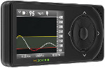
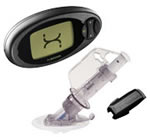

|  | |
| Transmiter Weight |
10 g |
| Transmiter Size (Length,Width,Thickness) |
3.8 cm x 2.3 cm x 1.3 cm |
| Receiver Weight |
69 g |
| Receiver Size (Length,Width,Thickness) |
10.1 cm x 4.6 cm x 1.3 cm |
| Receiver Memory Storage |
30 days of glucose data, 7 days of tech support data |
| Screen Size | 1.875" x 1.5" |
| Sensor Life | 7 days |
| Sensor Canula size |
13 mm |
| Angle of Sensor Insertion |
45º |
| Insertion Device | DexCom G4 Applicator (comes with sensors) |
| Start-Up Initialization Time |
2 hours |
| Calibration | every 12 hours with any meter |
| User set alarms on low/high |
Yes, one high, two low (user set limit + 55mg/dl alarm) |
| Predictive alarms for low/high |
yes |
| Alarms for rate of change |
yes |
| Displays glucose numbers |
Every 5 minutes |
| Displays Directional Trends |
Yes, displays a 1, 3, 6, or 12 hour glucose graph |
| Displays Rate of Change |
Yes, arrows indicate steady, slow/medium/fast rise or fall |
| Review glucose data? |
Yes, last 24 hours |
| Capture events | Yes, user can enter insulin, carbs, BGs, exercise, and health events |
| Alarms, vibrates, or both |
Alarm or Vibrate, vibrate for low first, then alarm |
| Waterprooof Transmitter |
Yes, up to 3 ft for 30 min |
| Transmitter Batteries |
life uknown, non-replaceable. |
| Monitor Batteries |
rechargable via USB |
| Range | 5 feet |
| Snooze Alarm |
Yes |
| BG Monitor | Any |
| Computer Software |
DexCom Studio |
| Warranty | 12 months for receiver and transmitter |
| Money-back gaurantee |
30 day, not for sensors |
|  | |
| Weight | 2.9 oz |
| Screen Size | 1.875" x 1.5" |
| Monitor Size (L x W) |
3" x 2.5" |
| Transmitter/ Sensor Size (LxWxH) |
1" x 0.75" |
| Sensor Life | 7 days |
| Sensor Canula size |
13 mm |
| Angle of Sensor Insertion |
45º |
| Insertion Device | DexCom SEVEN Applicator |
| Start-Up Initialization Time |
2 hours |
| Calibration | every 12 hours with OneTouch Ultra |
| User set alarms on low/high |
Yes, one high, two low (user set limit + 55mg/dl alarm) |
| Predictive alarms for low/high |
0 |
| Alarms for rate of change |
one each for high and low (either 2 or 3 mg/dl per minute) |
| Displays glucose numbers |
Every 5 minutes |
| Displays Directional Trends |
Yes, displays a 1, 3, 6, or 12 hour glucose graph |
| Displays Rate of Change |
Yes, arrows indicate steady, slow/medium/fast rise or fall |
| Review glucose data? |
Yes, last 24 hours |
| Capture events | Yes, user can enter insulin, carbs, BGs, exercise, and health events |
| Alarms, vibrates, or both |
Alarm or Vibrate, vibrate for low first, then alarm |
| Waterprooof Transmitter |
Yes, up to 3 ft for 30 min |
| Transmitter Batteries |
life uknown, non-replaceable, additional transmitter $250 |
| Monitor Batteries |
rechargable, every 5 days for 3 hours |
| Range | 5 feet |
| Snooze Alarm |
Yes |
| BG Monitor | Any |
| Computer Software |
DexCom DM Data Manager 3 |
| Warranty | 12 months for receiver and transmitter |
| Money-back gaurantee |
30 day, not for sensors |